642 moments, in order · fold
- 8:47 AM — Began the adventure
- 8:47 AM — Entered Scarlet Raven Tavern (Duskwood)
- 8:47 AM — Entered Darkshire (Duskwood)
- 8:48 AM — Entered Duskwood
- 8:48 AM — Entered Brightwood Grove (Duskwood)
- 8:48 AM — Discovered Brightwood Grove
- 8:48 AM — Discovered Brightwood Grove
- 8:49 AM — First Nightbane Shadow Weaver slain
- 8:50 AM — First Nightbane Dark Runner slain
- 8:51 AM — First Nightbane Worgen slain
- 8:53 AM — 6/6 Nightbane Shadow Weaver slain — "Worgen in the Woods"
- 8:54 AM — Entered Duskwood
- 8:54 AM — Entered Darkshire (Duskwood)
- 8:54 AM — Completed "Worgen in the Woods"
- 8:54 AM — Accepted "Worgen in the Woods"
- 8:55 AM — Entered Brightwood Grove (Duskwood)
- 9:01 AM — Joined forces with Valerian (Paladin)
- 9:03 AM — 12/12 Nightbane Dark Runner slain — "Worgen in the Woods"
- 9:04 AM — Entered Darkshire (Duskwood)
- 9:04 AM — Completed "Worgen in the Woods"
- 9:04 AM — Accepted "Worgen in the Woods"
- 9:05 AM — Parted ways with Valerian
- 9:05 AM — Entered Scarlet Raven Tavern (Duskwood)
- 9:07 AM — Entered Darkshire (Duskwood)
- 9:07 AM — Entered Duskwood
- 9:08 AM — Joined forces with Meramera (Mage)
- 9:08 AM — Joined forces with Teleportal (Mage)
- 9:08 AM — First Nightbane Vile Fang slain
- 9:09 AM — First Nightbane Tainted One slain
- 9:10 AM — Entered Roland's Doom (Duskwood)
- 9:10 AM — Discovered Roland's Doom
- 9:10 AM — First Gutspill slain
- 9:10 AM — Entered Duskwood
- 9:11 AM — Accepted "An Old History Book"
- 9:11 AM — Return the book: The History of Stormwind, to the Stormwind Library. — "An Old History Book"
- 9:11 AM — Joined forces with Faustine (Rogue)
- 9:11 AM — 8/8 Nightbane Vile Fang slain — "Worgen in the Woods"
- 9:11 AM — Entered Roland's Doom (Duskwood)
- 9:12 AM — Entered Duskwood
- 9:12 AM — Entered Roland's Doom (Duskwood)
- 9:13 AM — A scene in Roland's Doom, alone (1 line)
- 9:14 AM — Entered Duskwood
- 9:14 AM — Entered Roland's Doom (Duskwood)
- 9:14 AM — Entered Duskwood
- 9:15 AM — Entered Roland's Doom (Duskwood)
- 9:15 AM — Entered Duskwood
- 9:16 AM — Entered Roland's Doom (Duskwood)
- 9:17 AM — Parted ways with Faustine
- 9:17 AM — Entered Duskwood
- 9:17 AM — Joined forces with Kamandra (Paladin)
- 9:18 AM — Entered Roland's Doom (Duskwood)
- 9:19 AM — Entered Duskwood
- 9:20 AM — Discovered The Rotting Orchard
- 9:20 AM — Discovered The Rotting Orchard
- 9:20 AM — Entered The Rotting Orchard (Duskwood)
- 9:21 AM — Entered Duskwood
- 9:22 AM — Entered The Yorgen Farmstead (Duskwood)
- 9:22 AM — Discovered The Yorgen Farmstead
- 9:22 AM — Discovered The Yorgen Farmstead
- 9:22 AM — Entered The Rotting Orchard (Duskwood)
- 9:22 AM — First Defias Night Runner slain
- 9:22 AM — Entered The Yorgen Farmstead (Duskwood)
- 9:22 AM — Entered The Rotting Orchard (Duskwood)
- 9:22 AM — Entered The Yorgen Farmstead (Duskwood)
- 9:23 AM — Entered Duskwood
- 9:23 AM — Entered The Yorgen Farmstead (Duskwood)
- 9:23 AM — 8/8 Nightbane Tainted One slain — "Worgen in the Woods"
- 9:24 AM — Entered Duskwood
- 9:24 AM — Parted ways with Meramera
- 9:24 AM — Parted ways with Teleportal
- 9:25 AM — Parted ways with Kamandra
- 9:25 AM — Entered Darkshire (Duskwood)
- 9:26 AM — Completed "Worgen in the Woods"
- 9:26 AM — Accepted "Worgen in the Woods"
- 9:26 AM — Bring Calor's note to Jonathan Carevin. — "Worgen in the Woods"
- 9:27 AM — Completed "Worgen in the Woods"
- 9:27 AM — Looted Consecrated Wand (Uncommon)
- 9:27 AM — Looted Cloak of the Faith (Uncommon)
- 9:32 AM — Discovered Tranquil Gardens Cemetery
- 9:32 AM — Discovered Tranquil Gardens Cemetery
- 9:32 AM — Entered Tranquil Gardens Cemetery (Duskwood)
- 9:34 AM — Looted Gleaming Claymore of Holy Wrath (Uncommon)
- 9:34 AM — First Skeletal Mage slain
- 9:35 AM — 6/6 Skeletal Mage slain — "The Night Watch"
- 9:37 AM — 8/8 Skeletal Warrior slain — "The Night Watch"
- 9:37 AM — Entered Duskwood
- 9:37 AM — Entered Darkshire (Duskwood)
- 9:37 AM — Entered Duskwood
- 9:38 AM — Entered Darkshire (Duskwood)
- 9:38 AM — Entered Darkshire Town Hall (Duskwood)
- 9:39 AM — Entered Darkshire (Duskwood)
- 9:39 AM — Completed "The Night Watch"
- 9:40 AM — Accepted "The Night Watch"
- 9:40 AM — Accepted "Look to the Stars"
- 9:41 AM — Entered Duskwood
- 9:41 AM — Joined forces with Friar (Priest)
- 9:41 AM — First Skeletal Horror slain
- 9:42 AM — Parted ways with Friar
- 9:45 AM — A scene in Duskwood with Roxius Lightwell (2 lines)
- 9:47 AM — 15/15 Skeletal Horror slain — "The Night Watch"
- 9:47 AM — Entered Darkshire (Duskwood)
- 9:48 AM — Entered Scarlet Raven Tavern (Duskwood)
- 9:59 AM — Overheard in Scarlet Raven Tavern: Celcias Stormbringer, Larry Lockjaw and Andycapp Hotfries (3 lines)
- 10:01 AM — Entered Darkshire (Duskwood)
- 10:01 AM — Found the flight path at Darkshire
- 10:02 AM — Flew from Darkshire to Lakeshire, Redridge
- 10:02 AM — Entered Duskwood
- 10:02 AM — Entered The Darkened Bank (Duskwood)
- 10:02 AM — Entered Duskwood
- 10:02 AM — Entered Three Corners (Redridge Mountains)

10:02 AM — Entered Redridge Mountains - 10:02 AM — Entered Redridge Mountains
- 10:03 AM — Entered Lake Everstill (Redridge Mountains)
- 10:06 AM — Entered Lakeshire (Redridge Mountains)
- 10:06 AM — Completed "Messenger to Darkshire"
- 10:06 AM — Entered Lake Everstill (Redridge Mountains)
- 10:07 AM — Entered Redridge Mountains
- 10:14 AM — Flew from Redridge Mountains to Ironforge, Dun Morogh
- 10:15 AM — Entered Three Corners (Redridge Mountains)
- 10:15 AM — Entered Elwynn Forest
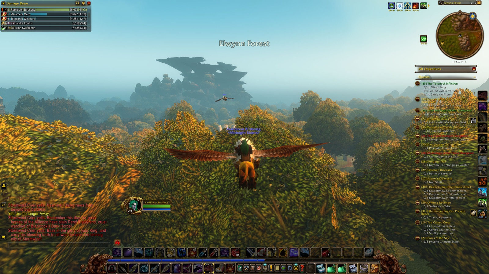
10:15 AM — Entered Elwynn Forest - 10:15 AM — Entered Ridgepoint Tower (Elwynn Forest)
- 10:15 AM — Entered Elwynn Forest
- 10:15 AM — Entered Eastvale Logging Camp (Elwynn Forest)
- 10:15 AM — Entered Elwynn Forest
- 10:15 AM — Entered Tower of Azora (Elwynn Forest)
- 10:16 AM — Entered Crystal Lake (Elwynn Forest)
- 10:16 AM — Entered Goldshire (Elwynn Forest)
- 10:16 AM — Entered Elwynn Forest
- 10:16 AM — Entered Valley of Heroes (Stormwind City)

10:16 AM — Entered Stormwind City - 10:16 AM — Entered Elwynn Forest
- 10:17 AM — Entered Crystal Lake (Elwynn Forest)
- 10:17 AM — Entered Northshire Vineyards (Elwynn Forest)
- 10:17 AM — Entered Northshire Valley (Elwynn Forest)
- 10:17 AM — Entered Elwynn Forest
- 10:17 AM — Entered Burning Steppes
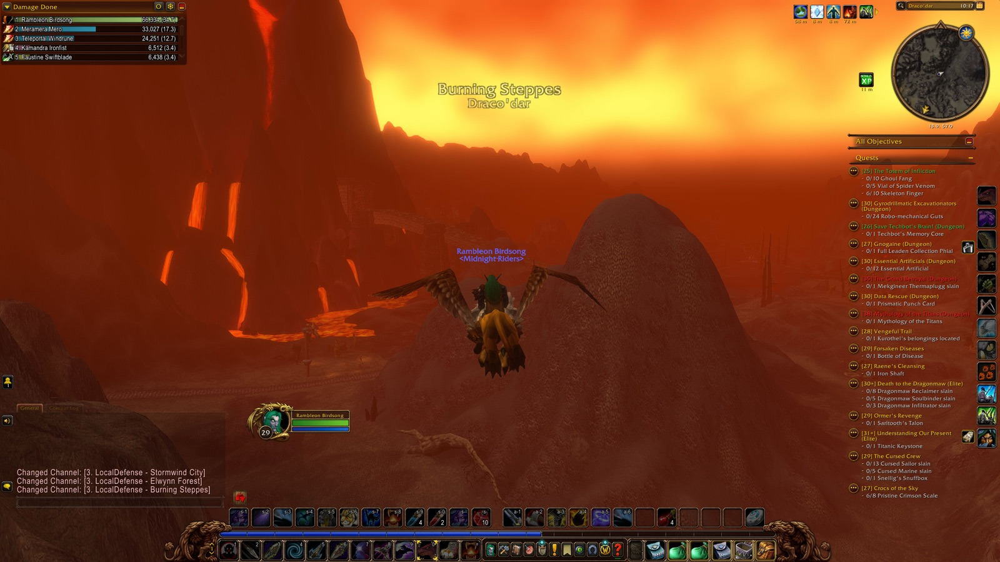
10:17 AM — Entered Burning Steppes - 10:17 AM — Entered Draco'dar (Burning Steppes)
- 10:18 AM — Entered Blackrock Mountain (Burning Steppes)
- 10:18 AM — Entered Burning Steppes
- 10:18 AM — Entered Blackrock Stronghold (Burning Steppes)
- 10:18 AM — Entered Burning Steppes
- 10:18 AM — Entered The Sea of Cinders (Searing Gorge)

10:18 AM — Entered Searing Gorge - 10:19 AM — Entered The Cauldron (Searing Gorge)
- 10:19 AM — Entered Searing Gorge
- 10:19 AM — Entered Firewatch Ridge (Searing Gorge)
- 10:19 AM — Entered Searing Gorge
- 10:19 AM — Entered Dun Morogh

10:19 AM — Entered Dun Morogh - 10:19 AM — Entered The Tundrid Hills (Dun Morogh)
- 10:19 AM — Entered Dun Morogh
- 10:20 AM — Entered Kharanos (Dun Morogh)
- 10:20 AM — Entered Dun Morogh
- 10:20 AM — Entered Gates of Ironforge (Dun Morogh)
- 10:20 AM — Entered Ironforge

10:20 AM — Entered Ironforge - 10:20 AM — Entered The Great Forge (Ironforge)
- 10:22 AM — Entered The Military Ward (Ironforge)
- 10:22 AM — Entered Hall of Arms (Ironforge)
- 10:23 AM — Learned |cff71d5ff|Hspell:14302:0|h[Immolation Trap (Rank 2)]|h|r
- 10:23 AM — Learned Immolation Trap
- 10:23 AM — Learned Rapid Fire
- 10:23 AM — Learned Serpent Sting
- 10:23 AM — Learned Track Elementals
- 10:23 AM — Learned Aimed Shot
- 10:23 AM — Learned Arcane Shot
- 10:23 AM — Learned Aspect of the Hawk
- 10:23 AM — Learned Frost Trap
- 10:23 AM — Learned |cff71d5ff|Hspell:3661:0|h[Mend Pet (Rank 3)]|h|r
- 10:23 AM — Learned Mend Pet
- 12:44 PM — Entered Hall of Arms (Ironforge)
- 12:56 PM — Accepted "The Brassbolts Brothers"
- 12:56 PM — Bring the crate of crash helmets to Wizzle Brassbolts in the Shimmering Flats. — "The Brassbolts Brothers"
- 12:56 PM — Accepted "Stonegear's Search"
- 12:56 PM — Entered The Military Ward (Ironforge)
- 12:56 PM — Entered The Great Forge (Ironforge)
- 12:57 PM — Hearthed home to Deepwater Tavern
- 12:57 PM — Entered Deepwater Tavern (Wetlands)
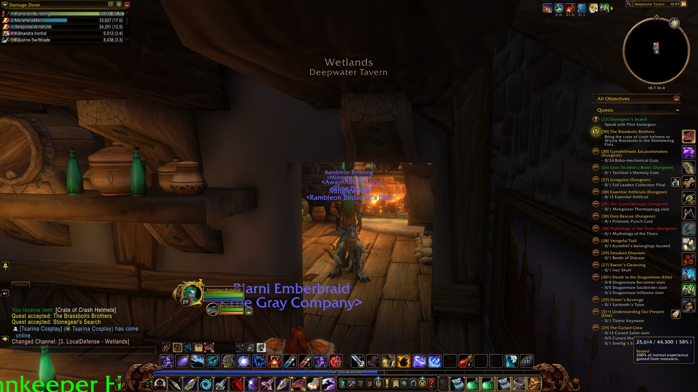
12:57 PM — Entered Wetlands - 3:22 PM — Entered Deepwater Tavern (Wetlands)
- 3:22 PM — Entered Menethil Harbor (Wetlands)
- 3:23 PM — Entered Menethil Bay (Wetlands)
- 3:23 PM — Entered Wetlands
- 3:25 PM — Entered Bluegill Marsh (Wetlands)
- 3:26 PM — Entered Sundown Marsh (Wetlands)
- 3:26 PM — Entered Wetlands
- 3:26 PM — Entered Sundown Marsh (Wetlands)
- 3:26 PM — Entered Wetlands
- 3:27 PM — Entered Whelgar's Excavation Site (Wetlands)
- 3:27 PM — First Mottled Scytheclaw slain
- 3:27 PM — Joined forces with Pain (Paladin)
- 3:28 PM — First Mottled Razormaw slain
- 3:30 PM — First Goaz Warder (elite) slain
- 3:30 PM — Looted Moss Agate (Uncommon)
- 3:30 PM — 1/1 Titanic Keystone — "Understanding Our Present"
- 3:33 PM — Parted ways with Pain
- 3:33 PM — First Sarltooth slain
- 3:33 PM — 1/1 Sarltooth's Talon — "Ormer's Revenge"
- 3:39 PM — Looted Raptor's End (Uncommon)
- 3:39 PM — Completed "Ormer's Revenge"
- 3:39 PM — Looted Excavation Cloak (Uncommon)
- 3:39 PM — Completed "Understanding Our Present"
- 3:40 PM — Accepted "Gleaning Our Future"
- 3:42 PM — Entered Wetlands
- 3:42 PM — Entered Sundown Marsh (Wetlands)
- 3:42 PM — Entered Bluegill Marsh (Wetlands)
- 3:43 PM — Entered Sundown Marsh (Wetlands)
- 3:46 PM — Entered Wetlands
- 3:49 PM — Entered The Green Belt (Wetlands)
- 3:50 PM — First Lost Whelp slain
- 3:50 PM — First Crimson Whelp slain
- 3:55 PM — First Red Whelp slain
- 3:55 PM — 8/8 Pristine Crimson Scale — "Crocs of the Sky"
- 3:56 PM — Joined forces with Cassidy (Druid)
- 3:56 PM — Entered Wetlands
- 3:56 PM — Entered The Green Belt (Wetlands)
- 3:58 PM — Entered Wetlands
- 3:58 PM — Abandoned "Alchemical Hazards"
- 3:59 PM — Discovered Dun Modr
- 3:59 PM — Discovered Dun Modr
- 3:59 PM — Entered Dun Modr (Wetlands)
- 3:59 PM — Completed "Fall of Dun Modr"
- 4:00 PM — Joined forces with Chofni (Priest)
- 4:01 PM — Slain by Modr (elite) in Dun Modr
- 4:02 PM — Entered Wetlands
- 4:02 PM — Back among the living
- 4:02 PM — Entered Dun Modr (Wetlands)
- 4:02 PM — Joined forces with Holydae (Paladin)
- 4:04 PM — First Modr (elite) slain
- 4:04 PM — 1/1 Heart of Modr — "Gleaning Our Future"
- 4:05 PM — Entered Wetlands
- 4:05 PM — Entered Direforge Hill (Wetlands)
- 4:05 PM — Discovered Direforge Hill
- 4:05 PM — Discovered Direforge Hill
- 4:07 PM — First Neru (elite) slain
- 4:07 PM — 1/1 Heart of Neru — "Gleaning Our Future"
- 4:09 PM — Entered The Green Belt (Wetlands)
- 4:09 PM — Entered Dragonmaw Retreat (Wetlands)
- 4:09 PM — Entered The Green Belt (Wetlands)
- 4:10 PM — Entered Dragonmaw Retreat (Wetlands)
- 4:10 PM — Discovered Dragonmaw Gates
- 4:10 PM — Earned achievement: Explore Wetlands
- 4:10 PM — Discovered Dragonmaw Gates
- 4:10 PM — Entered Dragonmaw Gates (Wetlands)
- 4:12 PM — First Dragonmaw Infiltrator (elite) slain
- 4:13 PM — First Ados (elite) slain
- 4:13 PM — 1/1 Heart of Ados — "Gleaning Our Future"
- 4:14 PM — Entered Dragonmaw Retreat (Wetlands)
- 4:15 PM — Entered The Green Belt (Wetlands)
- 4:15 PM — Entered Dragonmaw Retreat (Wetlands)
- 4:15 PM — First Dragonmaw Reclaimer (elite) slain
- 4:15 PM — Looted Dervish Belt of the Sorcerer (Uncommon)
- 4:16 PM — Parted ways with Cassidy
- 4:16 PM — Entered The Green Belt (Wetlands)
- 4:16 PM — 3/3 Dragonmaw Infiltrator slain — "Death to the Dragonmaw"
- 4:17 PM — Entered Dragonmaw Retreat (Wetlands)
- 4:17 PM — Entered The Green Belt (Wetlands)
- 4:17 PM — Entered Dragonmaw Retreat (Wetlands)
- 4:17 PM — Entered Wetlands
- 4:18 PM — Entered Mosshide Fen (Wetlands)
- 4:19 PM — Entered Wetlands
- 4:20 PM — First Golm (elite) slain
- 4:21 PM — 1/1 Heart of Golm — "Gleaning Our Future"
- 4:21 PM — Entered Mosshide Fen (Wetlands)
- 4:21 PM — Parted ways with Holydae
- 4:22 PM — Parted ways with Chofni
- 4:22 PM — Entered Wetlands
- 4:23 PM — Entered The Green Belt (Wetlands)
- 4:23 PM — Entered Wetlands
- 4:23 PM — Entered The Green Belt (Wetlands)
- 4:23 PM — Entered Wetlands
- 4:23 PM — Entered The Green Belt (Wetlands)
- 4:23 PM — Entered Wetlands
- 4:25 PM — Entered Whelgar's Excavation Site (Wetlands)
- 4:26 PM — Completed "Gleaning Our Future"
- 4:26 PM — Looted Golem War Cloak (Rare)
- 4:26 PM — Accepted "For Further Study"
- 4:26 PM — Bring the Whelgar Relic Package to Historian Karnik in Ironforge. — "For Further Study"
- 4:26 PM — Hearthed home to Deepwater Tavern
- 4:27 PM — Entered Deepwater Tavern (Wetlands)
- 4:27 PM — Entered Menethil Harbor (Wetlands)
- 4:27 PM — Completed "Crocs of the Sky"
- 4:27 PM — Reached Level 30
- 4:27 PM — Entered Menethil Keep (Wetlands)
- 4:28 PM — Accepted "Fiora Longears"
- 4:28 PM — Entered Menethil Harbor (Wetlands)
- 4:30 PM — Entered Baradin Bay (Wetlands)
- 4:32 PM — Entered The Great Sea (Wetlands)
- 4:32 PM — Entered Baradin Bay (Wetlands)
- 4:33 PM — Entered The Great Sea (Wetlands)
- 4:33 PM — Entered The Great Sea (Hillsbrad Foothills)

4:33 PM — Entered Hillsbrad Foothills - 4:33 PM — Entered Eastern Strand (Hillsbrad Foothills)
- 4:34 PM — Entered Western Strand (Hillsbrad Foothills)
- 4:34 PM — Discovered Western Strand
- 4:34 PM — Discovered Western Strand
- 4:34 PM — Entered Southshore (Hillsbrad Foothills)
- 4:34 PM — Discovered Southshore
- 4:34 PM — Discovered Southshore
- 4:35 PM — Completed "The Shamed Lieutenant"
- 4:35 PM — Accepted "Down the Coast"
- 4:35 PM — Accepted "Talk of the Town"
- 4:35 PM — Accepted "Soothing Turtle Bisque"
- 4:40 PM — Accepted "Brewer's Trade"
- 4:40 PM — Accepted "Crushridge Bounty"
- 4:40 PM — Accepted "Bartolo's Yeti Fur Cloak"
- 4:41 PM — Found the flight path at Southshore
- 4:41 PM — Accepted "Hints of a New Plague?"
- 4:41 PM — Made Southshore home
- 5:51 PM — Entered Southshore (Hillsbrad Foothills)
- 7:41 PM — Entered Southshore (Hillsbrad Foothills)
- 7:42 PM — Discovered Hillsbrad Foothills
- 7:42 PM — Entered Hillsbrad Foothills
- 7:43 PM — First Feral Mountain Lion slain
- 7:44 PM — Discovered Nethander Stead
- 7:44 PM — Discovered Nethander Stead
- 7:45 PM — Entered Nethander Stead (Hillsbrad Foothills)
- 7:48 PM — Hearthed home to Southshore
- 7:48 PM — Entered Southshore (Hillsbrad Foothills)
- 7:51 PM — Flew from Southshore to Ironforge, Dun Morogh
- 7:51 PM — Entered Eastern Strand (Hillsbrad Foothills)
- 7:52 PM — Entered The Great Sea (Hillsbrad Foothills)
- 7:52 PM — Entered The Great Sea (Wetlands)
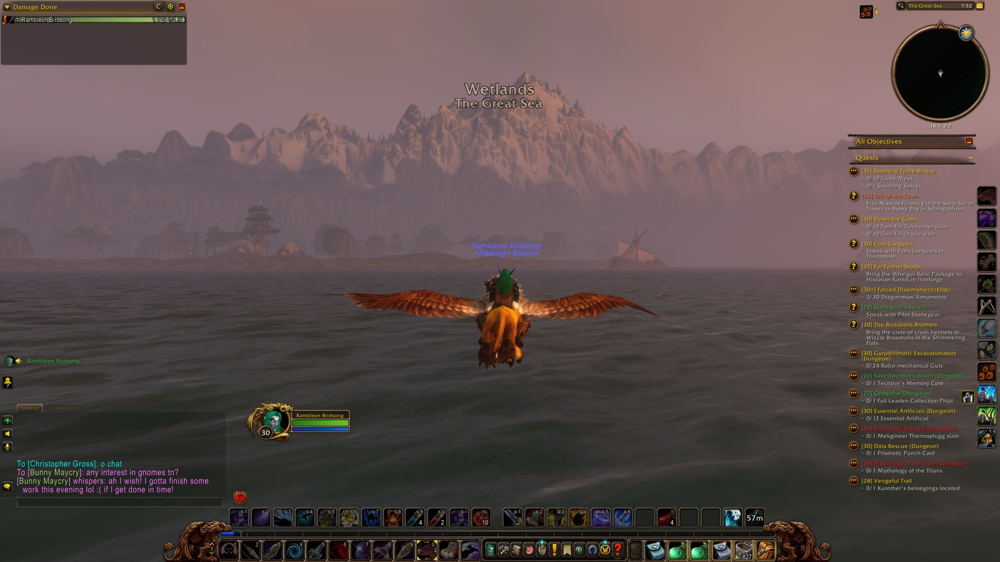
7:52 PM — Entered Wetlands - 7:52 PM — Entered Baradin Bay (Wetlands)
- 7:52 PM — Entered The Lost Fleet (Wetlands)
- 7:52 PM — Joined forces with Cassidy (Druid)
- 7:52 PM — Entered Baradin Bay (Wetlands)
- 7:52 PM — Entered Bluegill Marsh (Wetlands)
- 7:53 PM — Entered Wetlands
- 7:53 PM — Entered Menethil Bay (Wetlands)
- 7:53 PM — Entered Wetlands
- 7:53 PM — Entered Dun Morogh
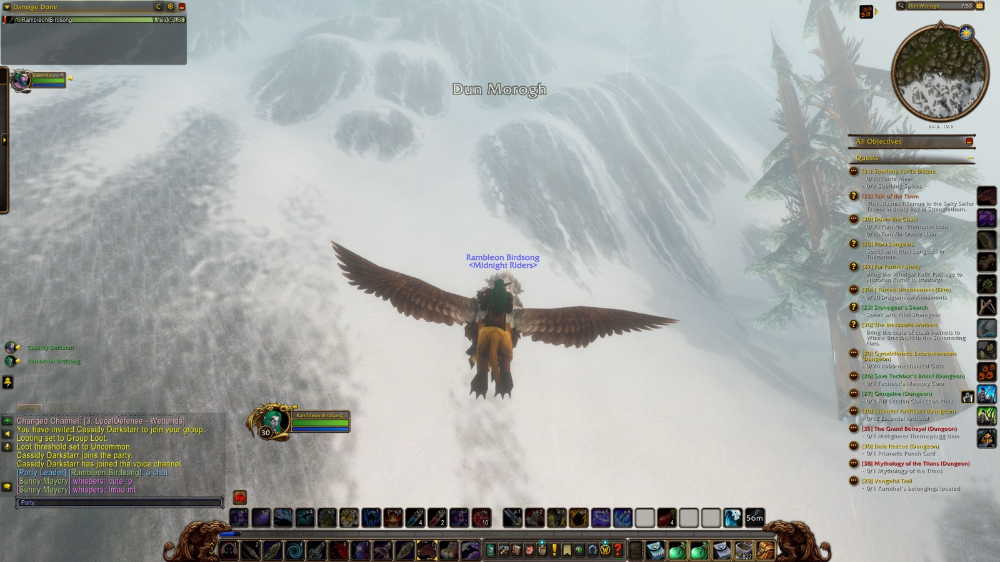
7:53 PM — Entered Dun Morogh - 7:54 PM — Entered Gates of Ironforge (Dun Morogh)
- 7:54 PM — Entered Ironforge
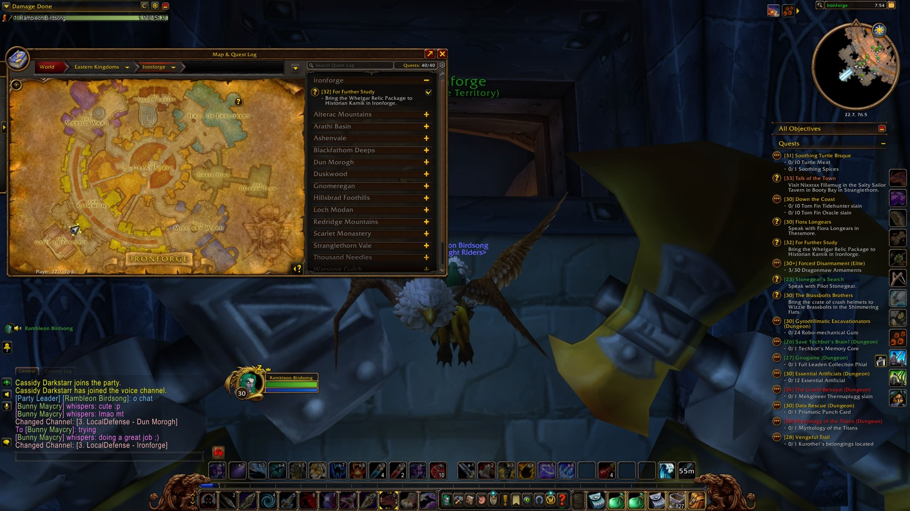
7:54 PM — Entered Ironforge - 7:54 PM — Entered The Great Forge (Ironforge)
- 7:54 PM — Entered Ironforge
- 7:55 PM — Entered Hall of Explorers (Ironforge)
- 7:55 PM — Entered The Library (Ironforge)
- 7:55 PM — Completed "For Further Study"
- 7:55 PM — Accepted "Ironband Wants You!"
- 7:57 PM — Entered Hall of Explorers (Ironforge)
- 7:58 PM — Abandoned "Find Bingles"
- 7:58 PM — Abandoned "The Totem of Infliction"
- 7:58 PM — Accepted "Reclaimers' Business in Desolace"
- 7:59 PM — Entered Ironforge
- 7:59 PM — Entered Hall of Explorers (Ironforge)
- 8:00 PM — Entered Tinker Town (Ironforge)
- 8:00 PM — Entered The Military Ward (Ironforge)
- 8:01 PM — Entered Hall of Arms (Ironforge)
- 8:01 PM — Learned |cff71d5ff|Hspell:13161:0|h[Aspect of the Beast (Rank 1)]|h|r
- 8:01 PM — Learned Aspect of the Beast
- 8:01 PM — Learned Distracting Shot
- 8:01 PM — Learned Feign Death
- 8:01 PM — Learned Mongoose Bite
- 8:01 PM — Learned Scare Beast
- 8:02 PM — Accepted "Darkspear Islands Clash"
- 8:03 PM — Entered The Military Ward (Ironforge)
- 8:04 PM — Entered Hall of Arms (Ironforge)
- 8:05 PM — Learned |cff71d5ff|Hspell:24508:0|h[Arcane Resistance (Rank 2)]|h|r
- 8:05 PM — Learned |cff71d5ff|Hspell:24441:0|h[Fire Resistance (Rank 2)]|h|r
- 8:05 PM — Learned |cff71d5ff|Hspell:24476:0|h[Frost Resistance (Rank 2)]|h|r
- 8:05 PM — Learned |cff71d5ff|Hspell:4199:0|h[Great Stamina (Rank 5)]|h|r
- 8:05 PM — Learned |cff71d5ff|Hspell:14924:0|h[Growl (Rank 4)]|h|r
- 8:05 PM — Learned |cff71d5ff|Hspell:24559:0|h[Natural Armor (Rank 5)]|h|r
- 8:05 PM — Learned |cff71d5ff|Hspell:24511:0|h[Nature Resistance (Rank 2)]|h|r
- 8:05 PM — Learned |cff71d5ff|Hspell:24514:0|h[Shadow Resistance (Rank 2)]|h|r
- 8:05 PM — Entered The Military Ward (Ironforge)
- 8:05 PM — Entered Ironforge
- 8:06 PM — Entered Gates of Ironforge (Dun Morogh)
- 8:10 PM — Entered Ironforge
- 8:11 PM — Joined forces with Unbeatable (Paladin)
- 8:12 PM — Entered The Military Ward (Ironforge)
- 8:13 PM — Entered Hall of Arms (Ironforge)
- 8:13 PM — Joined forces with Manbear (Druid)
- 8:13 PM — Entered The Military Ward (Ironforge)
- 8:13 PM — Joined forces with Hydro (Warrior)
- 8:15 PM — Entered Ironforge
- 8:22 PM — Entered Gates of Ironforge (Dun Morogh)
- 8:26 PM — Joined forces with Cassidy (Druid)
- 8:26 PM — Joined forces with Unbeatable (Paladin)
- 8:26 PM — Joined forces with Manbear (Druid)
- 8:26 PM — Joined forces with Hydro (Warrior)
- 8:26 PM — Entered Dun Morogh
- 8:27 PM — Discovered Shimmer Ridge
- 8:27 PM — Discovered Shimmer Ridge
- 8:27 PM — Discovered Chill Breeze Valley
- 8:27 PM — Discovered Chill Breeze Valley
- 8:27 PM — Entered Chill Breeze Valley (Dun Morogh)
- 8:29 PM — Learned |cff71d5ff|Hspell:1293241:0|h[Summon Hawk (Rank 1)]|h|r
- 8:29 PM — Learned Summon Hawk
- 8:29 PM — Learned Focused Fire
- 8:29 PM — Entered Iceflow Lake (Dun Morogh)
- 8:29 PM — Discovered Iceflow Lake
- 8:29 PM — Discovered Iceflow Lake
- 8:30 PM — Entered Brewnall Village (Dun Morogh)
- 8:30 PM — Discovered Brewnall Village
- 8:30 PM — Discovered Brewnall Village
- 8:30 PM — Discovered Gnomeregan
- 8:30 PM — Discovered Gnomeregan
- 8:30 PM — Entered Gnomeregan (Dun Morogh)
- 8:31 PM — Entered Gnomeregan
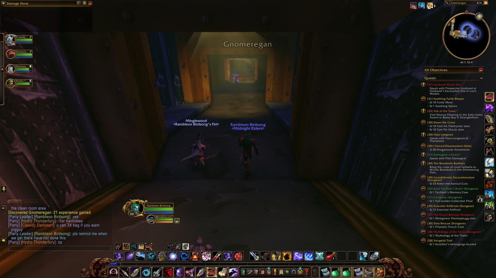
8:31 PM — Entered Gnomeregan - 8:31 PM — Discovered Gnomeregan
- 8:31 PM — Entered Gnomeregan (Dun Morogh)
- 8:33 PM — Entered Gnomeregan
- 8:34 PM — Entered Train Depot (Gnomeregan)
- 8:35 PM — First Caverndeep Pillager (elite) slain
- 8:36 PM — Entered Gnomeregan
- 8:36 PM — Entered Train Depot (Gnomeregan)
- 8:36 PM — Entered Gnomeregan
- 8:36 PM — Entered Train Depot (Gnomeregan)
- 8:36 PM — Entered Loading Room (Gnomeregan)
- 8:37 PM — First Techbot (elite) slain
- 8:37 PM — 1/1 Techbot's Memory Core — "Save Techbot's Brain!"
- 8:37 PM — Entered Train Depot (Gnomeregan)
- 8:38 PM — Entered Loading Room (Gnomeregan)
- 8:38 PM — Entered Train Depot (Gnomeregan)
- 8:39 PM — Entered Gnomeregan
- 8:39 PM — Entered Gnomeregan
- 8:39 PM — Entered The Clockwerk Run (Gnomeregan)
- 8:40 PM — Entered The Hall of Gears (Gnomeregan)
- 8:40 PM — First Caverndeep Ambusher slain
- 8:41 PM — First Caverndeep Burrower slain
- 8:41 PM — First Irradiated Pillager slain
- 8:43 PM — Entered The Dormitory (Gnomeregan)
- 8:43 PM — Entered The Clean Zone (Gnomeregan)
- 8:45 PM — Entered The Dormitory (Gnomeregan)
- 8:45 PM — First Caverndeep Reaver slain
- 8:46 PM — Looted Cavalier Two-hander of the Wolf (Uncommon)
- 8:46 PM — Looted Superior Belt of the Falcon (Uncommon)
- 8:49 PM — Abandoned "Stonegear's Search"
- 8:49 PM — Accepted "A Fine Mess"
- 8:50 PM — Abandoned "... and that note you found"
- 8:51 PM — Entered The Clean Zone (Gnomeregan)
- 8:51 PM — Accepted "The Sparklematic 5200!"
- 8:51 PM — 1/1 Grime-Encrusted Object — "The Sparklematic 5200!"
- 8:51 PM — Completed "The Sparklematic 5200!"
- 8:51 PM — Completed "The Sparklematic 5200!"
- 8:51 PM — Completed "More Sparklematic Action"
- 8:52 PM — Entered The Dormitory (Gnomeregan)
- 8:52 PM — Entered The Hall of Gears (Gnomeregan)
- 8:52 PM — Entered Gnomeregan
- 8:53 PM — Entered The Hall of Gears (Gnomeregan)
- 8:53 PM — Entered The Clockwerk Run (Gnomeregan)
- 8:54 PM — Entered The Hall of Gears (Gnomeregan)
- 8:54 PM — Entered Gnomeregan
- 9:01 PM — Defeated Grubbis
- 9:01 PM — First Chomper slain
- 9:01 PM — First Grubbis slain
- 9:03 PM — Entered The Hall of Gears (Gnomeregan)
- 9:03 PM — Entered The Dormitory (Gnomeregan)
- 9:03 PM — Entered The Clean Zone (Gnomeregan)
- 9:03 PM — Entered The Dormitory (Gnomeregan)
- 9:05 PM — First Irradiated Slime slain
- 9:05 PM — Entered The Hall of Gears (Gnomeregan)
- 9:05 PM — First Corrosive Lurker slain
- 9:07 PM — Defeated Viscous Fallout
- 9:07 PM — First Viscous Fallout slain
- 9:08 PM — Entered Gnomeregan
- 9:09 PM — First Leprous Defender slain
- 9:09 PM — First Mechanized Sentry slain
- 9:14 PM — Looted Jade (Uncommon)
- 9:15 PM — First Leprous Assistant slain
- 9:16 PM — Entered Launch Bay (Gnomeregan)
- 9:17 PM — First Leprous Technician slain
- 9:18 PM — First Peacekeeper Security Suit slain
- 9:22 PM — Defeated Electrocutioner 6000
- 9:22 PM — First Electrocutioner 6000 slain
- 9:22 PM — Looted Electrocutioner Leg (Rare)
- 9:23 PM — Looted Tigerseye (Uncommon)
- 9:26 PM — Entered Gnomeregan
- 9:29 PM — Entered Engineering Labs (Gnomeregan)
- 9:29 PM — First Leprous Machinesmith slain
- 9:29 PM — Entered Gnomeregan
- 9:30 PM — First Mechano-Frostwalker slain
- 9:30 PM — Entered Engineering Labs (Gnomeregan)
- 9:31 PM — Entered Gnomeregan
- 9:31 PM — Entered Engineering Labs (Gnomeregan)
- 9:32 PM — First Mechano-Flamewalker slain
- 9:32 PM — Entered Gnomeregan
- 9:33 PM — Looted Jade (Uncommon)
- 9:33 PM — Defeated Crowd Pummeler 9-60
- 9:33 PM — First Crowd Pummeler 9-60 slain
- 9:33 PM — Entered Engineering Labs (Gnomeregan)
- 9:33 PM — 24/24 Robo-mechanical Guts — "Gyrodrillmatic Excavationators"
- 9:34 PM — Entered Gnomeregan
- 9:34 PM — Entered Engineering Labs (Gnomeregan)
- 9:34 PM — Entered Gnomeregan
- 9:34 PM — Entered Engineering Labs (Gnomeregan)
- 9:35 PM — Entered Gnomeregan
- 9:35 PM — Entered Engineering Labs (Gnomeregan)
- 9:35 PM — Entered Gnomeregan
- 9:35 PM — Entered Engineering Labs (Gnomeregan)
- 9:35 PM — Entered Gnomeregan
- 9:36 PM — Entered Engineering Labs (Gnomeregan)
- 9:38 PM — Entered Gnomeregan
- 9:39 PM — First Arcane Nullifier X-21 slain
- 9:40 PM — First Mechanized Guardian slain
- 9:40 PM — First Dark Iron Agent slain
- 9:44 PM — Accepted "Grime-Encrusted Ring"
- 9:44 PM — Figure out a way to remove the grime from the Grime-Encrusted Ring. — "Grime-Encrusted Ring"
- 9:49 PM — First Dark Iron Ambassador slain
- 9:50 PM — Entered Tinkers' Court (Gnomeregan)
- 9:51 PM — Entered Gnomeregan
- 9:52 PM — Entered Tinkers' Court (Gnomeregan)
- 9:53 PM — Defeated Mekgineer Thermaplugg
- 9:53 PM — First Mekgineer Thermaplugg slain
- 9:53 PM — 1/1 Mekgineer Thermaplugg slain — "The Grand Betrayal"
- 9:53 PM — Looted Infiltrator Shoulders of the Bandit (Uncommon)
- 9:54 PM — Entered Gnomeregan
- 9:55 PM — Fell to death in Gnomeregan
- 9:56 PM — Died in Gnomeregan
- 9:56 PM — Left Gnomeregan
- 9:56 PM — Entered Kharanos (Dun Morogh)
- 9:56 PM — Entered The Grizzled Den (Dun Morogh)
- 9:56 PM — Entered Dun Morogh
- 9:57 PM — Entered Frostmane Hold (Dun Morogh)
- 9:58 PM — Entered Brewnall Village (Dun Morogh)
- 9:58 PM — Entered Frostmane Hold (Dun Morogh)
- 9:58 PM — Entered Gnomeregan (Dun Morogh)
- 9:58 PM — Entered Gnomeregan
- 9:59 PM — Entered Train Depot (Gnomeregan)
- 9:59 PM — Entered Gnomeregan
- 9:59 PM — Entered Gnomeregan
- 9:59 PM — Back among the living
- 9:59 PM — Entered The Clockwerk Run (Gnomeregan)
- 10:01 PM — Entered The Hall of Gears (Gnomeregan)
- 10:07 PM — Entered The Dormitory (Gnomeregan)
- 10:08 PM — Entered The Clean Zone (Gnomeregan)
- 10:08 PM — Parted ways with Hydro
- 10:08 PM — Completed "Grime-Encrusted Ring"
- 10:08 PM — Looted Brilliant Gold Ring (Uncommon)
- 10:08 PM — Accepted "Return of the Ring"
- 10:08 PM — You may either keep the ring, or you may find the person responsible for the imprint and engravings on the inside of the band. — "Return of the Ring"
- 10:08 PM — Completed "More Sparklematic Action"
- 10:09 PM — Completed "More Sparklematic Action"
- 10:09 PM — Completed "More Sparklematic Action"
- 10:10 PM — Completed "More Sparklematic Action"
- 10:10 PM — Completed "More Sparklematic Action"
- 10:10 PM — Looted Iridescent Pearl (Uncommon)
- 10:10 PM — Completed "More Sparklematic Action"
- 10:10 PM — Looted Shadowgem (Uncommon)
- 10:11 PM — Entered The Dormitory (Gnomeregan)
- 10:11 PM — Entered The Hall of Gears (Gnomeregan)
- 10:12 PM — Entered The Clockwerk Run (Gnomeregan)
- 10:12 PM — Left Gnomeregan
- 10:12 PM — Entered Gnomeregan
- 10:13 PM — Entered Train Depot (Gnomeregan)
- 10:13 PM — Entered Gnomeregan
- 10:14 PM — Slain by Addled Leper in Gnomeregan
- 10:14 PM — Entered Kharanos (Dun Morogh)
- 10:14 PM — Back among the living
- 10:16 PM — Entered Dun Morogh
- 10:17 PM — Entered Gates of Ironforge (Dun Morogh)
- 10:17 PM — Entered Ironforge
- 10:18 PM — Entered The Military Ward (Ironforge)
- 10:19 PM — Entered Tinker Town (Ironforge)
- 10:19 PM — Completed "Save Techbot's Brain!"
- 10:19 PM — Completed "The Grand Betrayal"
- 10:19 PM — Looted Triprunner Dungarees (Rare)
- 10:19 PM — Parted ways with Manbear
- 10:20 PM — Entered Hall of Explorers (Ironforge)
- 10:20 PM — Entered The Forlorn Cavern (Ironforge)
- 10:21 PM — Entered The Mystic Ward (Ironforge)
- 10:21 PM — Completed "Return of the Ring"
- 10:21 PM — Looted Brilliant Gold Ring (Uncommon)
- 10:21 PM — Accepted "Gnome Improvement"
- 10:21 PM — 1/1 Moss Agate — "Gnome Improvement"
- 10:22 PM — Entered The Forlorn Cavern (Ironforge)
- 10:22 PM — Entered The Mystic Ward (Ironforge)
- 10:22 PM — Entered The Great Forge (Ironforge)
- 10:22 PM — Overheard in The Great Forge: Asapgoi Bone and Kay Sinz (6 lines)
- 10:23 PM — Entered Ironforge
- 10:24 PM — Looted Silver Bar (Uncommon)
- 10:24 PM — 1/1 Silver Bar — "Gnome Improvement"
- 10:24 PM — Entered The Great Forge (Ironforge)
- 10:24 PM — Entered The Mystic Ward (Ironforge)
- 10:24 PM — Looted Talvash's Gold Ring (Rare)
- 10:24 PM — Completed "Gnome Improvement"
- 10:25 PM — Entered The Great Forge (Ironforge)
- 10:26 PM — Flew from The Great Forge to Stormwind, Elwynn
- 10:26 PM — Entered Ironforge
- 10:26 PM — Entered Gates of Ironforge (Dun Morogh)
- 10:26 PM — Entered Dun Morogh
- 10:26 PM — Entered Steelgrill's Depot (Dun Morogh)
- 10:26 PM — Entered Dun Morogh
- 10:27 PM — Entered Kharanos (Dun Morogh)
- 10:27 PM — Entered Dun Morogh
- 10:27 PM — Parted ways with Unbeatable
- 10:27 PM — Entered Searing Gorge
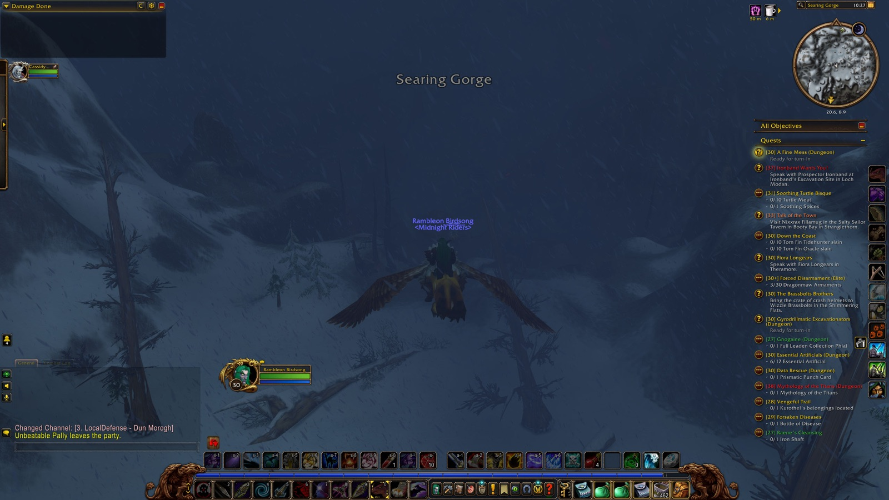
10:27 PM — Entered Searing Gorge - 10:27 PM — Entered Firewatch Ridge (Searing Gorge)
- 10:27 PM — Entered Searing Gorge
- 10:27 PM — Entered Blackchar Cave (Searing Gorge)
- 10:28 PM — Entered Searing Gorge
- 10:28 PM — Entered Burning Steppes
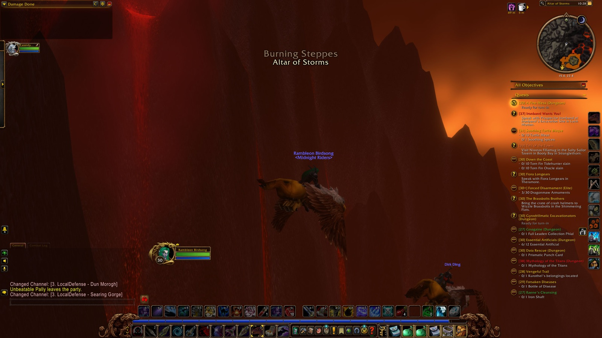
10:28 PM — Entered Burning Steppes - 10:28 PM — Entered Altar of Storms (Burning Steppes)
- 10:28 PM — Entered Burning Steppes
- 10:28 PM — Entered Draco'dar (Burning Steppes)
- 10:28 PM — Entered Burning Steppes
- 10:28 PM — Entered Elwynn Forest
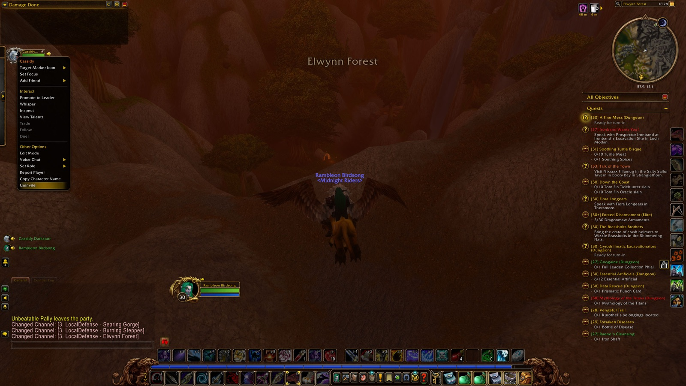
10:28 PM — Entered Elwynn Forest - 10:28 PM — Parted ways with Cassidy
- 10:29 PM — Entered Northshire Valley (Elwynn Forest)
- 10:29 PM — Entered Elwynn Forest
- 10:29 PM — Entered Valley of Heroes (Stormwind City)
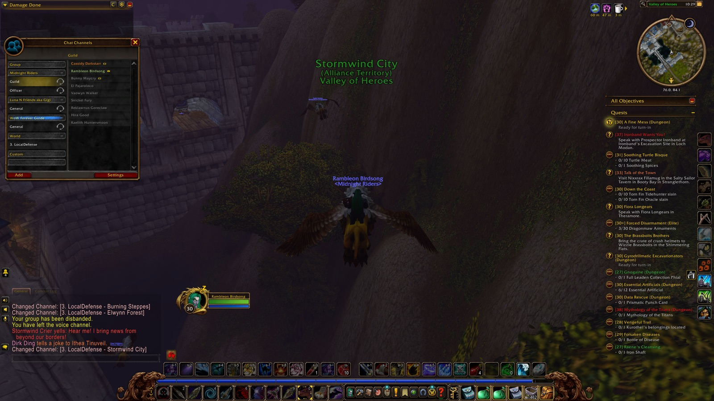
10:29 PM — Entered Stormwind City - 10:29 PM — Entered Trade District (Stormwind City)
- 10:39 PM — Entered The Canals (Stormwind City)
- 10:40 PM — Entered Dwarven District (Stormwind City)
- 10:41 PM — Reached Level 31
- 10:41 PM — Looted Operator's Gloves (Uncommon)
- 10:41 PM — Completed "Gyrodrillmatic Excavationators"
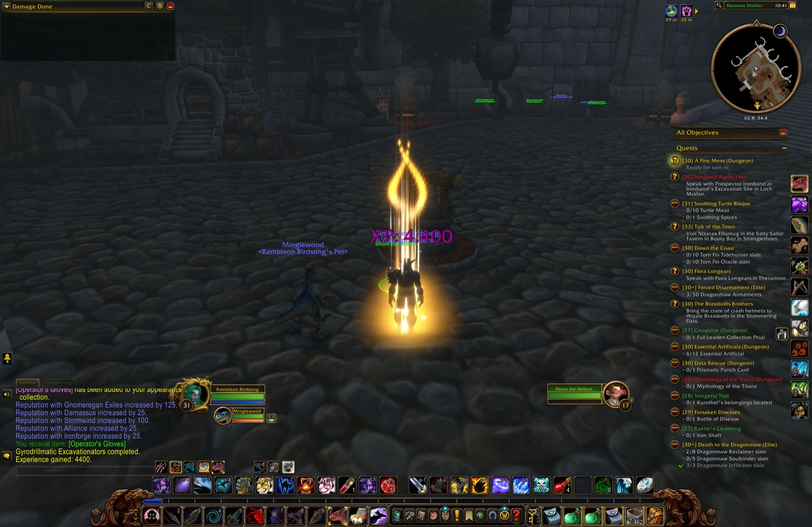
10:41 PM — Reached Level 31 in Dwarven District - 10:42 PM — Entered The Canals (Stormwind City)
- 10:42 PM — Entered Stormwind Keep (Stormwind City)
- 10:43 PM — Entered Petitioner's Chamber (Stormwind City)
- 10:43 PM — Accepted "The Perenolde Tiara"
- 10:43 PM — Entered Stormwind Keep (Stormwind City)
- 10:44 PM — Accepted "The Attack!"
- 10:47 PM — First Marzon the Silent Blade slain
- 10:47 PM — 1/1 Marzon the Silent Blade slain — "The Attack!"
- 10:48 PM — A scene in Stormwind Keep, alone (3 lines)
- 10:49 PM — Joined forces with Jim (Warrior)
- 10:50 PM — Entered Royal Library (Stormwind City)
- 10:50 PM — Completed "An Old History Book"
- 10:50 PM — Accepted "Southshore"
- 10:50 PM — Entered Stormwind Keep (Stormwind City)
- 10:53 PM — First Lord Gregor Lescovar slain
- 10:53 PM — 1/1 Lord Gregor Lescovar slain — "The Attack!"
- 10:53 PM — Parted ways with Jim
- 10:54 PM — Entered The Canals (Stormwind City)
- 10:54 PM — Entered Trade District (Stormwind City)
- 10:55 PM — Completed "The Attack!"
- 10:55 PM — Accepted "The Head of the Beast"